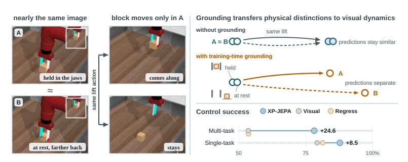
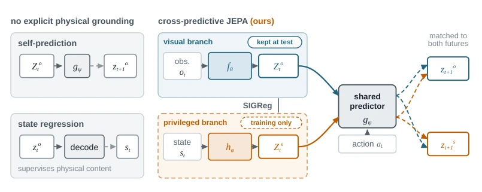
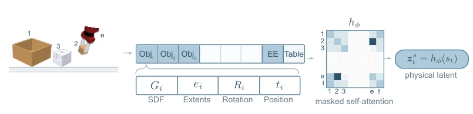
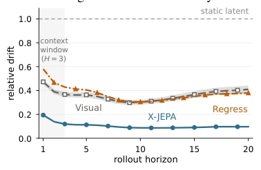
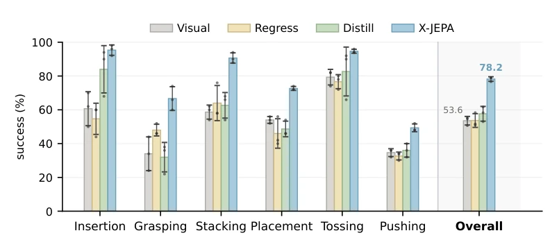
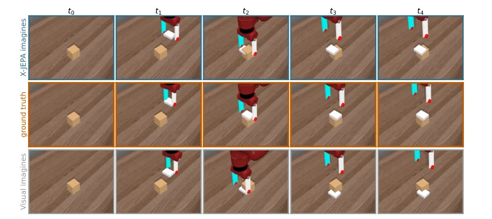
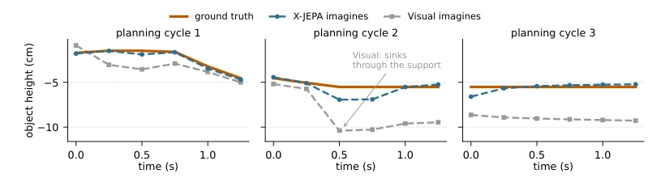
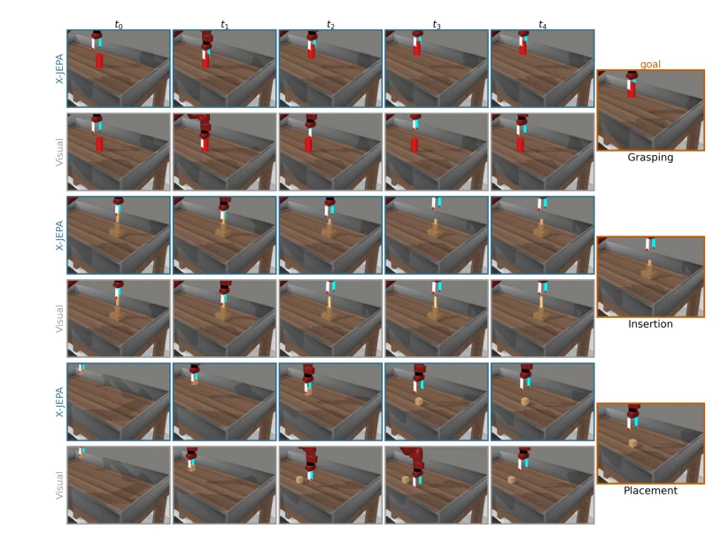
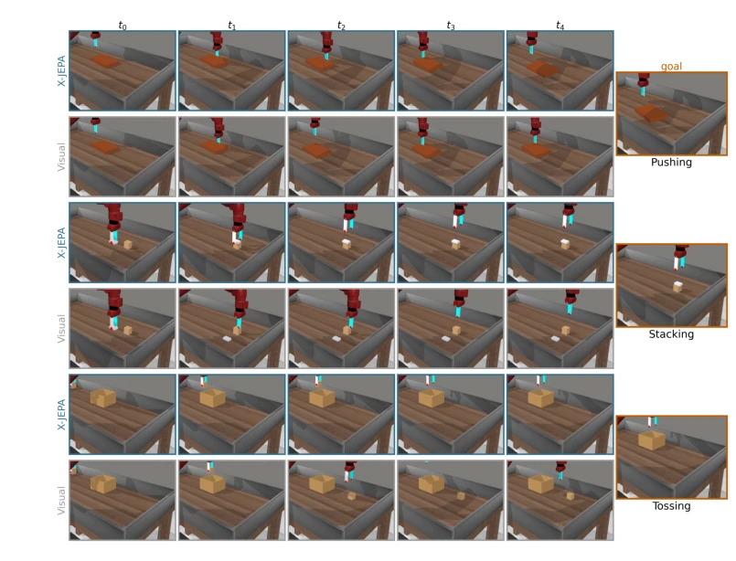

This paper delivers a "physics lesson" to self-extractive world models (JEPA), pointing out that merely "guessing" the future is insufficient because models tend to learn "self-deception"—predicting trajectories that appear reasonable but are physically absurd. XP-JEPA attempts to correct the dynamics of the visual latent space by using physical states as "privileged information," which indeed proves effective, with control success rates soaring from 53.6% to 78.2%, essentially equipping robots with a "physical cheat." However, this approach has a fatal weakness: it relies on perfect physical state data (privileged state) during training and requires discarding the physical branch during testing; how is this done in the actual physical world? Does every robot need to hide a perfect physics engine behind it? If the real world lacks a god's-eye view, this model might instantly revert to being a "blind man." Furthermore, although predictions are more accurate, control improvements are not significant across all tasks, indicating that "being able to predict" does not equal "being able to perform tasks," a point the authors are honest about.
研究动机Motivation
在基于潜空间世界模型的规划中，核心痛点是“共适应”（co-adaptation）问题。现有的自预测模型（如 LeCun 等人提出的 JEPA 范式，Assran et al., 2023; Zhou et al., 2024）在联合优化编码器和预测器时，容易陷入一种陷阱：它们学会了预测那些在潜空间内容易预测、但缺乏物理约束的虚假动态。如图 1 所示，两个视觉上相似但物理状态截然不同的场景（如物体被夹住 vs 物体静止），在自预测目标下可能被映射为相同的潜状态，导致预测器无法区分它们未来的演化路径。这种“预测容易但物理错误”的现象严重损害了基于 rollout 的规划能力。虽然已有研究利用特权信息（privileged information）进行蒸馏或状态回归（Chen et al., 2020; Gupta et al., 2016），但这些方法通常只关注让物理状态从单帧潜变量中可解码（decodability），却忽略了物理轨迹对“动态演化”本身的约束。仅仅知道“现在是什么”并不能保证“未来怎么变”是符合物理规律的。因此，亟需一种机制，利用物理轨迹直接约束视觉潜动态的预测过程，而不仅仅是内容对齐。
In planning based on latent space world models, the core pain point is the "co-adaptation" problem. Existing self-predictive models (such as the JEPA paradigm proposed by LeCun et al., Assran et al., 2023; Zhou et al., 2024) easily fall into a trap when jointly optimizing encoders and predictors: they learn to predict fake dynamics that are easy to predict in latent space but lack physical constraints. As shown in Figure 1, two scenes that are visually similar but have vastly different physical states (e.g., object clamped vs. object stationary) may be mapped to the same latent state under self-predictive objectives, causing the predictor to be unable to distinguish their future evolution paths. This phenomenon of "easy prediction but physically wrong" severely damages rollout-based planning capabilities. Although existing research utilizes privileged information for distillation or state regression (Chen et al., 2020; Gupta et al., 2016), these methods typically only focus on ensuring physical states are decodable from single-frame latent variables (decodability), while ignoring the constraints that physical trajectories impose on "dynamic evolution" itself. Merely knowing "what is now" does not guarantee that "how it changes in the future" conforms to physical laws. Therefore, a mechanism is urgently needed to use physical trajectories to directly constrain the prediction process of visual latent dynamics, rather than just content alignment.

Figure 1: Physical grounding distinguishes interactions that look alike but evolve differently. Left: in A the block is held; in B it rests farther along the same camera ray, so the same lift moves it only in A (insets magnify the same object window). Top right (schematic): the two observations encode almost identically, and a self- predictive objective is satisfied whether or not their predicted futures separate; matching each predicted visual transition to the corresponding physical future pulls them apart, with holding inferred from geometry rather than given as a contact label. The physical branch is used only in training. Bottom right: three-seed mean control success, the single-task value averaging the four environments of Table 2, where gains vary by task. REGRESS matches VISUAL on
The core idea of XP-JEPA is to treat visual observations and privileged physical states as two views of the same trajectory, forcing consistency in dynamic evolution through a cross-predictive mechanism. The overall process is divided into two phases: training and deployment. In the training phase, the model includes two encoders: visual encoder $f_\theta$ and physical encoder $h_\phi$. The physical encoder receives scene states described by a unified rigid-body schema (including object geometry, pose, manipulator state, etc.), generating physical latent variables $z^s$. Both share an action-conditioned predictor $g_\psi$. The loss function consists of four terms: visual self-prediction, physical self-prediction, and two key cross-prediction terms (predicting physical future from visual history, predicting visual future from physical history). This symmetric cross-prediction forces visual latent dynamics to follow the evolution laws of physical trajectories, not merely content alignment. Additionally, the model adopts a shared predictor architecture, ensuring a single model can handle history from different modalities. In the deployment phase, the physical branch $h_\phi$ is completely discarded, retaining only the visual encoder and predictor, making inference costs consistent with pure visual baselines. The innovations are: 1) proposing a cross-predictive objective that directly constrains dynamic evolution rather than single-frame content; 2) designing a unified rigid-body state interface that requires no task labels, supporting multi-task generalization; 3) achieving efficient deployment with physical guidance during training and pure visual during testing.

Figure 2: Physical supervision can constrain representation content or predictive dynamics. Visual self- prediction jointly trains a visual representation and predictor, while state regression makes physical information decodable from individual visual latents. Neither objective directly constrains a predicted visual transition using the corresponding physical future. XP-JEPA advances visual and privileged histories through a shared predictor and matches each prediction to the corresponding future representations in both modalities. The physical branch is removed after training, leaving a visual-only model at deployment.

Figure 3: Each scene is represented by object, end-effector, and table tokens under a shared schema. The physical encoder (hϕ) first applies masked self-attention over the valid scene tokens, then uses a learned query to attend to and pool the token set into a single physical latent (zs t ). Unused object slots are masked in both stages, allowing the same encoder to process scenes with different numbers of objects.
Experiments were conducted on four single-task environments (Push-T, OGBench-Block, Two-Room, Reacher) and a multi-task desktop suite containing 22 configurations (based on Meta-World). Baselines include pure visual JEPA (VISUAL), state regression (REGRESS), and distillation (DISTILL). Evaluation metrics cover control success rate, rollout drift (forecastability), and physical state decoding capability (R2). Results show that XP-JEPA improved control success rate from 53.6% to 78.2% on the multi-task suite, reduced rollout drift from 0.361 to 0.104, significantly outperforming baselines. Ablation experiments indicate that while state regression (REGRESS) alone improved position decoding R2 to 0.991, control success rate saw almost no improvement (53.7%), proving that "decodable" does not equal "predictable." The cross-prediction term contributed most to control improvement, whereas simply sharing a predictor or performing point-to-point alignment had limited effects. Notably, although prediction capability improved across all tasks, control gains were task-dependent, indicating that prediction accuracy is a necessary condition rather than a sufficient condition.

Figure 4: XP-JEPA produces more forecastable latent dynamics throughout the rollout. Multi- task suite, three training seeds.

Figure 5: Grounding improves multi-task control. XP-JEPA raises overall success from 53.6% to 78.2%, with improvements across all six interaction families. Regressing a comprehensive pose-based physical-state target from the visual latent does not recover the gain. Bars show means ± sample SD over three training seeds; dots show individual seeds.

Figure 6: Rolled over identical expert actions, XP-JEPA imagines the eraser reaching the block; VISUAL imagines it beside the block. Middle row: ground truth. Top and bottom: each model’s own rollout over the same action chunks from the same observation, with the decoded object and end-effector positions written back into the simulator and rendered.

Figure 7: Under the same actions, XP-JEPA imagines the object coming to rest on its support. Decoded height of the manipulated object during a stacking episode: ground truth against each model’s own rollout over the identical expert action chunks, one panel per planning cycle. VISUAL’s imagined object passes through the support and stays there; XP-JEPA has a mean terminal error of 1.4 cm across the three cycles.

Figure 8: XP-JEPA against VISUAL on the same scenario: grasping, insertion, and placement. Each family contributes a pair of rows executed from the same initial state using the same planner, XP-JEPA above and VISUAL below, cropped to the working volume. The goal is shared by both arms and is therefore shown once per comparison, spanning the family’s two rows. Scenarios are the representative episodes in which the two arms disagree, so each pair is a case XP-JEPA completes and VISUAL does not; per-family success rates are in Table 6.

Figure 9: XP-JEPA against VISUAL on the same scenario: pushing, stacking, and tossing. Same protocol as Figure 8: paired rows from one initial state, XP-JEPA above and VISUAL below, with the shared goal shown once per comparison. In stacking, VISUAL leaves the eraser beside the block; in tossing, it leaves the object outside the carton.